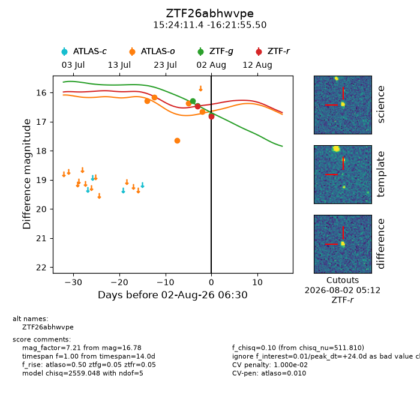
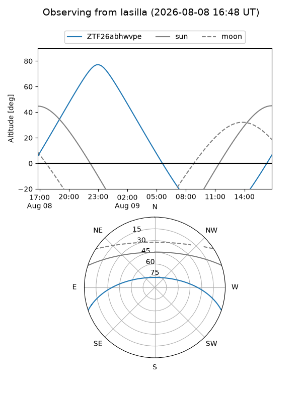
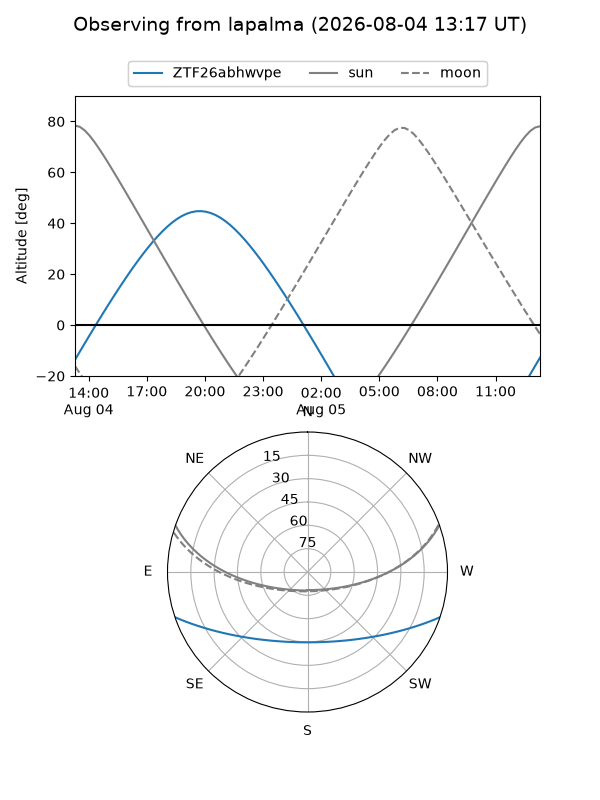
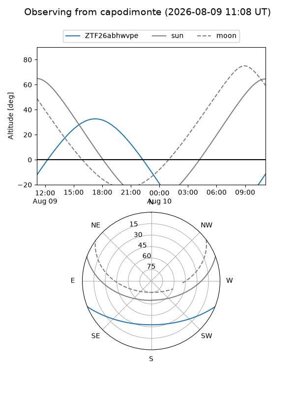
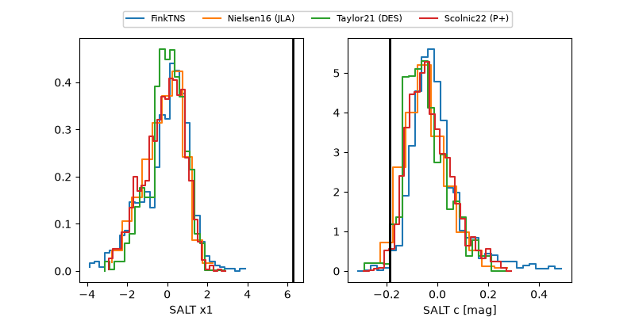

ZTF26abhwvpe
Target ZTF26abhwvpe at 2026-08-02 06:32
Aliases and brokers:
FINK-ZTF: ztf.fink-portal.org/ZTF26abhwvpe
Lasair-ZTF: lasair-ztf.lsst.ac.uk/objects/ZTF26abhwvpe
ALeRCE-ZTF: alerce.online/object/ZTF26abhwvpe
Direct TNS query: direct search
alt names
ZTF26abhwvpe (ztf,fink_ztf)
Coordinates:
equatorial (ra, dec) = 231.0476,-16.36542
equatorial (HMS+DMS) = 15:24:11.44,-16:21:55.50
galactic (l, b) = (347.8623,+32.86738)
Flags:
peak dt: +24.0
likely cv: !!
Photometry:
last atlaso=16.65, ztfg=16.78, ztfr=16.82
5 atlaso, 3 ztfg, 2 ztfr detections
Lightcurve

Visibility



Additional plots
